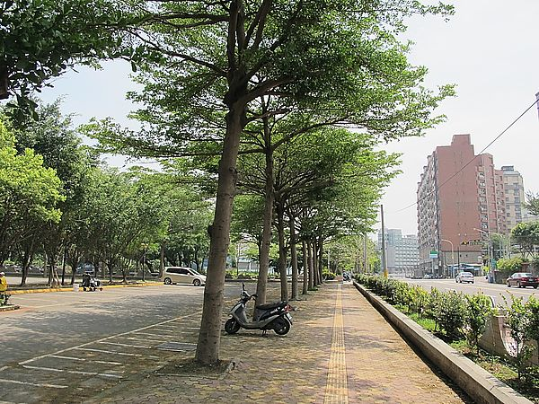

關於新竹市八大學區 @ 永慶阿健(陳先生)的房屋部落格＊新竹房屋買賣,新竹買屋,新竹賣屋,新竹房仲 :: 痞客邦 ::



※新竹市房地產業界所謂的”八大學區”範圍包括:竹蓮國小、東園國小、建華國中、培英國中、新竹高中、新竹高商、清華大學、交通大學等八所各級學校。
舊名為東山學區或省中學區。業界術語中的”學區”主要指小學,因為小學最需要離家近,但新竹八大學區集地利之優勢,除了小學外,還囊括了中學、大學,聯結成一條完整的生活教育網絡。
區域內尚有十八尖山公園、新竹公園、新竹體育館、孔廟、假日市集…等,休憩機能完善。位置介於新竹火車站與科學園區之間,地段條件相當優異。
檢視較大的地圖


 永慶阿健(陳先生)的房屋部落格＊新竹房屋買賣,新竹買屋,新竹賣屋,新竹房仲
永慶阿健(陳先生) 發表在 痞客邦 留言(0) 人氣(713)
永慶阿健(陳先生)的房屋部落格＊新竹房屋買賣,新竹買屋,新竹賣屋,新竹房仲
永慶阿健(陳先生) 發表在 痞客邦 留言(0) 人氣(713)

 您尚未登入，將以訪客身份留言。亦可登入留言
您尚未登入，將以訪客身份留言。亦可登入留言